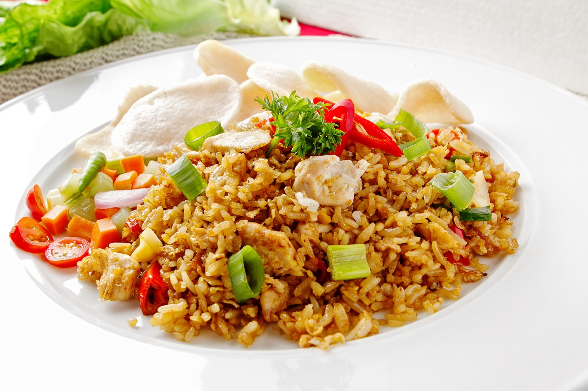

Fried Rice

Description
An authentic Japanese street recipe, this dish can be cooked to order, featuring a wide array of meats, a non-meat protein like tofu, or a simple medley of chopped vegetables. Scrambled egg is at the heart of this dish, and favorite features include onions, carrots, peas, squash, and scallions. Despite the name, the dish is surprisingly nutritious! It also feeds a lot of people without breaking your back or your bank account.
Ingredients (per serving)
- 1 Cup cooked Rice (long-grain rice is the best for this!)
- 2 Eggs
- 1 Carrot
- 1/2 Cup Peas
- 1/2 Sweet onion
- 1/4 Cup zucchini squash
- 1/4 pound protein (your choice!)
- 2 cloves garlic (minced)
- Salt (to taste)
- Soy sauce
- Sesame oil
Steps
- Prepare all ingredients by chopping and setting into dedicated cups or bowls for easy access at cook time.
- Heat wok on high until steam starts to rise from its surface.
- Coat in vegetable oil or canola oil (any oil with a neutral flavor and a high smoke point, though there is evidence canola oil may be carcinogenic at this level of heat; I prefer vegetable oil, and find the end result tastes just the same!)
- If using meat, cook first until about 80% done. Then, set aside. The combination of carry-over heat and eventually being added back to the dish near the end will guarantee it cooks through without over-drying.
- Set meat aside and cover with a towel, foil tent or platter to retain heat.
- Add oil back in.
- Crack two eggs directly into the oil, and beat using a metal wok spatula.
- Add any hardier vegetables which may take longer to cook, like carrots and onions. Cook until onions begin to soften or darken. You should begin to smell them easily.
- Add rice, and break up with spatula. Use alternating mashing and splitting with the spatula, while using a flipping motion with your wok to keep it tossing over and over in the egg and oil. (This is all easier if you use left-over refrigerated rice, or rice which has been spread out on a tin foil-covered baking sheet and let to dry some after being cooked.)
- Add any remaining vegetables like peas and squash. Keep the dish in motion to keep heat evenly distributed.
- Add chopped garlic and allow it to heat until you can smell its aroma clearly. Then return to stirring and tossing.
- While the garlic is heating, lightly drizzle a ring of soy sauce around the outer edge of the wok. Allow it to burn up at the edges of the dish. This will add a smokey, rich quality without directly adding the soy sauce and risking your company's ability to determine their own soy sauce flavor level at mealtime.
- Add the tiniest dash of sesame oil to start, and more to taste (be careful! Sesame oil can be very overpowering. You don't want to bury your other flavors!)
- Add a healthy dash of salt appropriate to the size of the total dish.
- If protein was removed at the beginning of the recipe, add it back in now.
- Lastly, add a healthy handful of chopped scallions and give it all a few more tosses before serving.